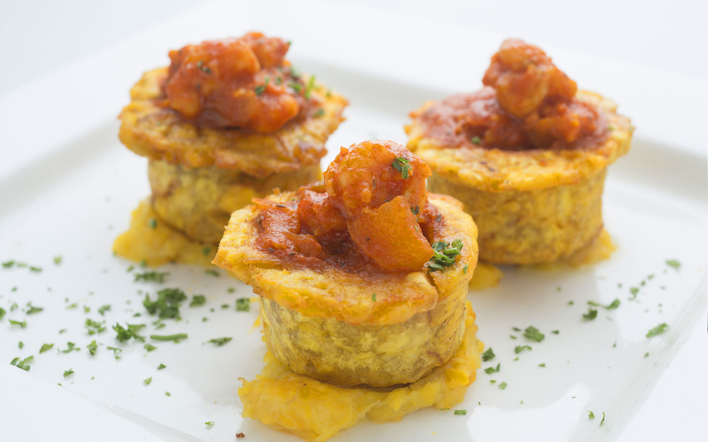

Cuba Restaurant and Rum Bar
When I first entered Cuba on a busy Saturday evening, I was immediately greeted by the sounds of a live salsa music performance, the smell of rich Cuban cuisine, and the sight of a clearly experienced bartender working to rapidly produce pitchers of mojitos and Sangria.
Located on Thompson street in Greenwich Village and originally opened in 2004, Cuba is dedicated to providing its customers with a high-quality, authentic Cuban dining experience. They offer an extensive menu of Cuban, Latin, and Spanish dishes in addition to a wide selection of cocktails. The restaurant hosts live Salsa music performances every Friday and Saturday night, as well as complementary hand rolled cigars prepared by Jose Martinez on Monday, Thursday, Friday, and Saturday.

During my visit to Cuba, because the open area at the front of the restaurant was completely full, the waiter guided us to the back of the restaurant, led us down a set of stairs into the basement, and seated us in a small, dimly lit room with its own separate bar. The hidden-away area felt sort of like a speakeasy, and provided a nice, quiet dining experience away from the restaurant’s very packed main seating area.
For appetizers, we ordered the Calamares con Tamarindo, the Papas Rellenas, and the Chorizo. The calamari dish was drizzled with a tamarind vinaigrette and had sweet plantains mixed in. I thought that the tamarind vinaigrette added a nice sweetness to the dish, and the plantains provided a nice soft, chewy texture that provided a perfect contrast to the crispy calamari. The papas rellenas was a relatively small dish in comparison to the calamari, but I liked the potatoes’ crispy outside and soft, gooey inside. The servers forget about our chorizo order so it ended up arriving after we had already finished out main course, however, its rich, heavy flavor was a good strong note to end our dinner with.
For drinks, we ended up ordering a pitcher of their Passion Fruit Mojito. Because we were seated so closely to the bar, I was able to watch as the bartender muddled a delicious medley of mint, limes, lemons, oranges, cherries, and many other fruits with Bacardi rum, seltzer, lime juice, and simple syrup to create our deliciously sweet pitcher. The pitcher was able to fill up about 6 large wine glasses, which makes it a steal for only $50.
Passion fruit mojito In terms of the music, the band consisted of 3 members who played the keyboard, conga drums, and bass guitar. While it was a relatively small band and they were stuffed in a tight corner of the restaurant in the main seating area, they had a strong, energetic sound that conveyed years of performing experience. While they didn’t provide an official setlist, I was able to recognize their performance of the song “Guantanamera,” a famous guajira from the 1930s that combines a medium-tempo son rhythm with a guitar backing. The band was definitely more of a background performance for diners to listen to while enjoying their food, and because the restaurant was so cramped with seating options, there was no space for people to dance.
Overall, I had a very positive dining experience at Cuba. The food was superb, the music was fantastic, the atmosphere felt authentic, and the drinks were to die for. If I had to raise one criticism, the restaurant’s staff were a bit rude and failed to completely write down our initial order. Nevertheless, I had a great time at Cuba, and I would rate the restaurant as 9/10.